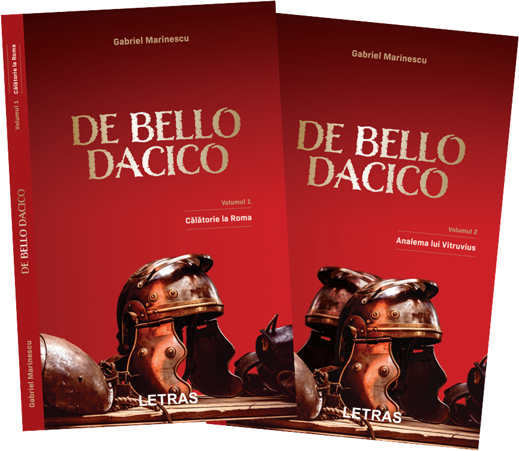

La Porta Raudusculana era pustiu. Toropiţi de soarele înalt de Iunie soldaţii de gardă moţăiau sprijiniţi în suliţe. Când decuria pestriţă ieşi din cetate, abia ridicară ochii. Prudent, Rutilius îşi duse legionarii la câteva sute de paşi dincolo de poartă. Aşteptarea încordată la început, deveni curând lâncezeală. Nimeni nu intra şi nimeni nu ieşea din cetate. În plus, căldura era ucigătoare. Spre amiază, când pierduseră aproape orice speranţă, câteva puncte mişcătoare se iviră dinspre Ostia.
- Uite-i! Ăştia sunt! zise Rutilius înviorat. Pe Via Ostiensis începeau să se vadă mai multe căruţe care uruiau greoi. Treziţi din amorţeală „soldaţii” se aliniară buimaci de-a latul drumului.
- Nene, ce facem cu ăştia? întrebă Oarcă în şoaptă.
- Stai liniştit, lasă-i pe ei să vorbească! zise Hălăucă pipăindu-şi precaut jungherul de sub chimir.
- Opriţi!!! Marfa la control! tună Rutilius.
- De ce, ce s-a întâmplat? întrebă Hălăucă.
- Toată marfa care intră în Roma trebuie controlată!
- Dă-ne pace, soldatule! Noi suntem negustori cinstiţi!
Rutilius deschise gura să răspundă, dar Pharnaces i-o luase înainte.
- Negustori cinstiţi?!? Dar cu armele astea ascunse ce este?!?
Înfierbântat Pharnaces se repezi la una din putini. Răsturnată din căruţă, putina căzu într-o rână şi se zdrobi de pietrele drumului. Pentru câteva clipe toţi rămaseră trăsniţi. Nici unii, nici alţii nu înţelegeau ce vedeau. Pharnaces nu înţelegea de ce printre bucăţile de brânza şi doagele împrăştiate nu vedea nici măcar un pumnal. Oarcă şi Hălăucă nu înţelegeau de ce nu văd nici măcar un denar. Rămas în dificultate, Pharnaces se repezi la a doua căruţă.
- Dar aici ce aveţi?!?
La fel ca prima, şi a doua putină îşi împrăştie zerul în praful drumului fără să arate nici pumnale, nici denari. Hălăucă îşi reveni primul din năuceală.
- O să mă plâng centurionului vostru că mi-aţi stricat marfa!!!
Treziţi din moţăială, soldaţii de la poarta cetăţii începeau să fie atenţi la gălăgia din mijlocul drumului. Rutilius înţelese repede că riscă să dea explicaţii soldaţilor de gardă, aşa că zise cu jumătate de gură.
- E-n ordine! Puteţi trece!
Căruţele se puseră în mişcare lăsând în urmă două grămezi de brânză şi doage rupte într-o baltă de zer. Totul intra din nou în amorţeala amiezii. Se auzeau doar gâzele cum ţârâie în iarba încinsă. Soldaţii de gardă se rezemară din nou plictisiţi în suliţe. După ce dacii plecară, Rutilius începu să se înfioare. Simţea deja vergile pe spinare când îi va spune stăpânei că nu a gasit bani în putinile dacilor. Frica de bătaie făcea să îi lucreze mintea febril. În urma lor căruţele intrau hodorogind prin Porta Raudusculana. Rutilius se apropie de Pharnaces.
- Eu cred că ăştia doi ne păcălesc! Lasă aici armamentul şi urmăreşte-i fără să te vadă. Trebuie să afli unde se duc, ce fac şi la ce han rămân peste noapte. Acum du-te să nu-i pierzi din ochi!
- Unde sunt banii, nene??? întrebă speriat Oarcă după ce trecură pe sub bolta porţii.
- Nu ştiu! După ce ajungem la han, căutăm în fiecare putină! Dar mi-e teamă că am lăsat ceva bani pe corabie!
Dincolo de poartă drumul pustiu şerpuia printre prăvălii şi magazii de marfă. Ici şi colo se vedea câte un om cum se mişcă toropit de căldura zilei de vară. Hălăucă opri dintr-o dată caii şi se întoarse pe capra căruţei curmeziş către nepot.
- Mă Oarcă, ai mai văzut tu legionari borţoşi, cum era ăla cu părul ca o claie de fân?
- Nu, n-am mai văzut, zise băiatul după ce se gândi bine.
- ... şi legionari să le clămpăne sandalele în picioare, cum era ăla mic şi crăcănat din margine?!?
Flăcăul era din ce în ce mai derutat.
- Mă Oarcă, aici e lucrătură!!! Ăştia au încercat să ne înşele, nu sunt legionari adevăraţi! Ne-au acuzat că venim cu arme în cetate, dar de fapt voiau să pună mâna pe putinile noastre!
- De ce crezi?
- Păi dacă erau legionari adevăraţi, de ce nu ne-au controlat marfa în faţa porţii, la corpul de gardă?
- Adică vrei să zici că cineva le-a spus că noi o să venim cu bani ascunşi în putini? întrebă Oarcă înfiorat.
- Cineva a vrut să pună mâna pe banii noştri!!! zise Hălăucă acuzator.
- Dar cine putea să ne vândă?
- Păi cine ştia că venim cu bani la Roma! deduse logic Hălăucă. În afară de Decebal, sunt numai cinci oameni care ştiau: Diegis, Bicilis, Vezina, tu şi eu. Noi doi suntem în afară de bănuială. Pe Marele Vezina nu îl cred în stare să ne vândă. Mai rămân Diegis şi Bicilis. Iar Diegis este fratele lui Decebal!
Ţine-mi urma, Oarcă!!! urlă Hălăucă şi se îndreptă spre Porta Triumphalis. Caius Lusius atârna moale în spatele dacului, fără putere să se împotrivească. Tribunele amuţiră, la fel şi ceilalţi gladiatori - se întâmpla ceva, mai mult decât o luptă pe viaţa şi pe moarte. Luând sabia lui Caius Lusius în mâna stângă, Oarcă se retrase încercând să apere spatele unchiului. Cei câţiva legionari care păzeau poarta de intrare în amfiteatru îşi scoaseră ameninţător săbiile din teacă.
Astacius se trezi primul din buimăceală.
- Noi ce facem? Rămânem aici să murim pentru ăştia?
- Să fugim cu dacii! răcni altul.
Astacius o luă la fugă spre poartă urmat îndeaproape de ceilalţi gladiatori. Legionarii care păzeau poarta fură spulberaţi în câteva clipe. În galeria exterioară alţi legionari fură mai mult călcaţi în picioare, fără să apuce să-şi încrucişeze săbiile. Rămasă mută la început, prostimea din tribune începea să se bulucească spre scările de acces. Părea că începe o nouă răscoală a gladiatorilor.
Porţile grele fură date cu zgomot în lături şi … stupoare! Aula Regia era pustie! Lângă tronul imperial un bătrân tremurând încerca
să îşi ţină cu demnitate spatele drept. Se sprijinea de braţul tronului, ceea ce făcea să îi tremure şi mai tare spatele.
- Marcus Nerva Cocceius, am venit să te arestăm! Dar după primele clipe generalul îşi dădu seama că nu era ceea ce ar fi trebuit spus.
- Ştiu, Aelianus, nu îţi cer să îmi cruţi viaţa, în schimb îţi cer să fii drept cu tine însuţi! Ai dovada că eu ascund pe ucigaşii lui Domiţian???
Lacrimi, nepotrivite pentru faţa brăzdată de anii bătrâneţii, se scurgeau pe obrajii împăratului. Aelianus se fâstâci. Cu sutele de legionari în spate, se simţea mai slab decât acest bătrân tremurând.
- Cât plătiţi? întrebă scurt Chiara.
- Să spunem douăzeci de mii de denari …
- Ha-ha-ha, fac alergie când aud! Aici totul costă, lumânări din ceară, candele cu lemn de santal, terme, sclavi, veşminte … vila … totul costă şi voi îmi spuneţi de douăzeci de mii de denari … prieteni, sunt prea scumpă pentru buzunarele voastre! Proserpina! strigă Chiara nervoasă bătând din palme, condu oaspeţii afară!
Când sclava intră, Lentulus îi strecură din nou doi sesterţi în palmă. Chiara simţi clar că cei doi pot fi uşuraţi de bani mai mulţi.
- Ce îmi cereţi pentru banii ăştia?
- Să te întorci la Roma şi să îi spui convingător lui Aelianus că nu mai poţi dormi din cauza minciunii în care eşti obligată să trăieşti …
- Douăzeci şi cinci de mii, pentru că trebuie să joc teatru!
- … că dacă nici Garda Praetoriană nu poate face dreptate, mai bine pleci în Egipet …
- … treizeci de mii, dar …